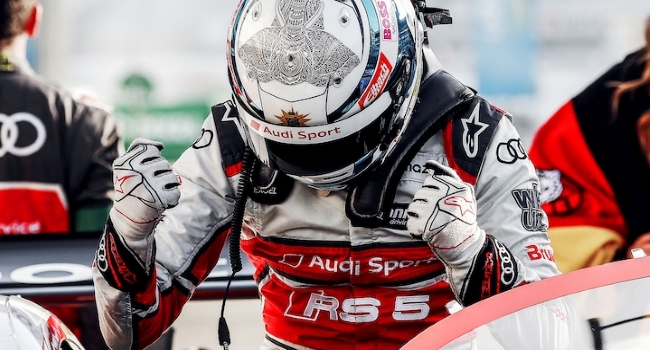
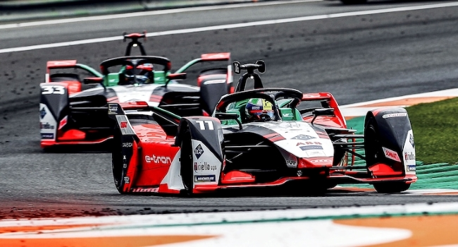
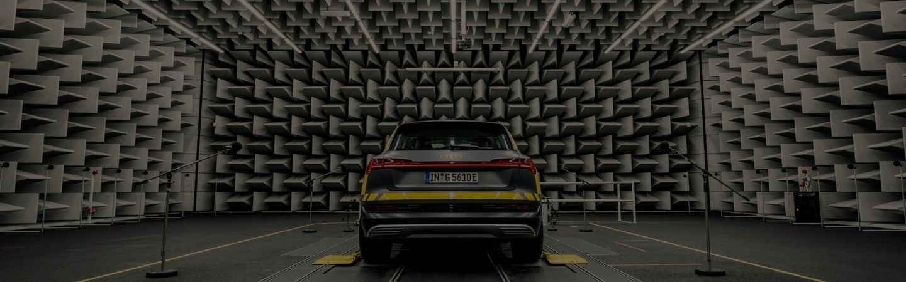

Discover Audi as a brand, company and employer on our international website.
Here you will find information about models and technologies.
Inspiring content, interesting backgrounds and fascinating moments – digital,
individual and authentic. Experience our vision of mobility and let yourself be inspired.

Audi sport
Audi racing
Since 1981, Audi Sport stands for “Vorsprung durch Technik” in international racing. The programme of the brand with the four rings currently includes FIA Formula E, DTM and customer racing.

Audi race
Audi racing models
Many race cars from the more than 30-year history of Audi Sport are icons today. The current offering of models includes race cars for FIA Formula E, DTM and customer racing.

E-Mobility 09/17/2021
This is the sound of an electric car
What does an electric car sound like? Audi sound designer Rudi Halbmeir and Stephan Gsell show what goes into creating just the right sound. Along with artificial noises, some unusual instruments also come in to play.
Discover the world of Audi
Company
Careers
Models
Experience audi
We dedicate every waking moment to shaping the future.
Each day, we bring the world another little step forward – with our ideas, our passion, and our visions for the future of mobility.
The specified fuel consumption and emission data have been determind according to the measurement procedures prescribed by law. Since 1st September 2017, certain new vehicles are already being type-approved according to the Worldwide Harmonized Light Vehicles Test Procedure (WLTP), a more realistic test procedure for measuring fuel consumption and CO2 emissions. Starting on September 1st 2018, the New European Driving Cycle (NEDC) will be replaced by the WLTP in stages. Owing to the more realistic test conditions, the fuel consumption and CO2 emissions measured according to the WLTP will, in many cases, be higher than those measured according to the NEDC. Therefore, the usage of CO2 emission values measured according to WLTP for vehicle taxation from 1st September 2018 on can cause changes in this regards as well. For further information on the differences between the WLTP and NEDC, please visit www.audi.de/wltp.
!
We are currently still required by law to state the NEDC figures. In the case of new vehicles which have been type-approved according to the WLTP, the NEDC figures are derived from the WLTP data. It is possible to specify the WLTP figures voluntarily in addition until such time as this is required by law. In cases where the NEDC figures are specified as value ranges, these do not refer to a particular individual vehicle and do not constitute part of the sales offering.
!
They are intended exclusively as a means of comparison between different vehicle types. Additional equipment and accessories (e.g. add-on parts, different tyre formats, etc.) may change the relevant vehicle parameters, such as weight, rolling resistance and aerodynamics, and, in conjunction with weather and traffic conditions and individual driving style, may affect fuel consumption, electrical power consumption, CO2 emissions and the performance figures for the vehicle.